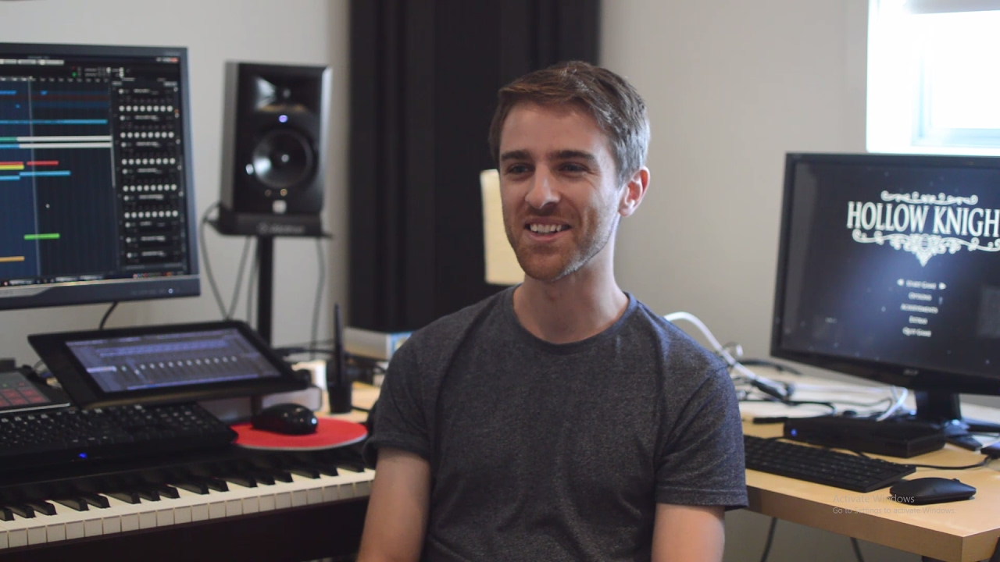

Christopher Larkin

Biografía y Carrera
Christopher Larkin es un compositor y diseñador de sonido australiano, nacido en Adelaida. Con una formación clásica en la Elder Conservatorium of Music, Larkin comenzó su carrera trabajando en cortometrajes y documentales antes de dar el salto a la industria de los videojuegos. Su enfoque combina la elegancia de la música clásica con texturas modernas y sintéticas.
Visión Artística
Larkin no solo escribe música; diseña paisajes emocionales. Su capacidad para entender la soledad y la majestuosidad de un mundo en ruinas fue lo que convenció a Team Cherry de que él era el único capaz de musicalizar Hallownest.
El Proyecto de su Vida
Cuando Larkin se unió a Team Cherry, el juego aún estaba en sus primeras etapas de Kickstarter. La colaboración fue tan estrecha que muchas áreas del juego fueron rediseñadas basándose en el "sentimiento" que la música de Christopher transmitía.
Estilo y Composición
El estilo de Larkin en Hollow Knight se caracteriza por el uso de un **piano melancólico** que actúa como la voz del Caballero, acompañado por cuerdas (violín y violonchelo) que representan la historia trágica de Hallownest. Larkin grabó muchos de los instrumentos en vivo para capturar las imperfecciones humanas que le dan alma a la obra.
Hardware y Producción
Desde una perspectiva técnica, Larkin utiliza estaciones de trabajo de audio digital (DAW) de alta gama como Cubase. Su proceso incluye una mezcla de librerías de muestras orquestales de élite y grabaciones acústicas en estudio para lograr un sonido orgánico.
Diseño de Sonido
Christopher también fue responsable de los efectos de sonido (SFX). El tintineo de las armaduras, el susurro del viento en el Abismo y los gritos de los jefes fueron diseñados para estar en la misma tonalidad que la música de fondo.
Integración en Unity
Utilizó sistemas de audio dinámicos donde la música cambia de volumen o añade instrumentos según la posición del Caballero en el mapa (como el cambio suave cuando te acercas a un banco o entras en combate).
Más Allá de Hallownest
Aunque es mundialmente famoso por Hollow Knight, Larkin ha trabajado en otros títulos destacados como Pac-Man 256, TOHU y el esperado Hollow Knight: Silksong. Su evolución musical para la secuela promete ser más vibrante y centrada en instrumentos de cuerda frotada, reflejando el dinamismo de Hornet.